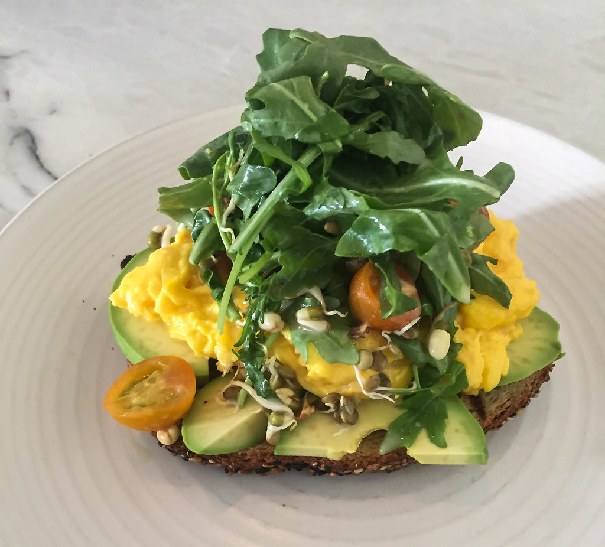

Avocado Toast
Description
Yes, I'm a millenial and yes I love me some avocado toast. Bite me. :p What I love even more, though, is just how versatile this dish is.
Avocado toast can be as simple or as complex as you want it to be. Sometimes, I just want just the bread and avacado. Other times, I'm gormet it up, taking as much as a half hour to get my toast ready!
This recipe will focus on the basics, but you can do up your avocado toast however you want to.
And with that in mind, let's get to it!
Ingredients
- One medium to large avocado
- A couple slices of nice quality bread
- Butter or olive oil
- Optional toppings and condiments of your choosing
Steps
- Heat up some butter or olive oil in a pan.
- Soak up that melted butter or oil with the bread.
- Toast it. Now you have a few options here:
- You can leave it in the pan and let it toast that way, or/li>
- You can remove the bread and toast in an oven or toaster.
- While your bread toasts, slice up your avocado. I know some people like to smush the avocado to hell. If you're one of those people, more power to you, but I'm not about that life. If I wanted guacamole, then I'd make that... properly --- but you do you. ;) Also, keep an eye your toast! Toasty bread has a way of sneaking up on you.
- Add the avocado to your toasty bread and enjoy! Ooorr...
- Gourmet it up and add some of your favorite toppings to it. I personally enjoy fresh greens, roasted tomato, cheese, mustard, and sometimes the occasional fried egg and hot sauce - but that's getting into sandwich territory lol.
Anyway, I have blabbed enough. Go off and enjoy your avocado toast my fellow "entitled" millenial! I know I'm going to enjoy mine!